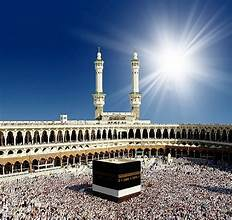

WELCOME
Religious Diversity of Bihar
Religions in Bihar

Hinduism – The dominant religion in Bihar, with deep roots in the region's culture and traditions.
Islam – A significant community practicing Islam, contributing to the vibrant religious landscape.


Buddhism – Originating in Bihar, where Gautama Buddha attained enlightenment in Bodh Gaya.
Jainism – An ancient religion associated with Lord Mahavira, born in Vaishali, Bihar.


Sikhism – Patna Sahib, the birthplace of Guru Gobind Singh, is a revered pilgrimage site for Sikhs.
Christianity – Practiced by a smaller segment, contributing to the state's religious diversity.


Tribal Religions – Indigenous communities follow nature-centric spiritual practices and beliefs.
Zoroastrianism – Though a minor presence, Zoroastrians contribute to Bihar’s diverse cultural tapestry.